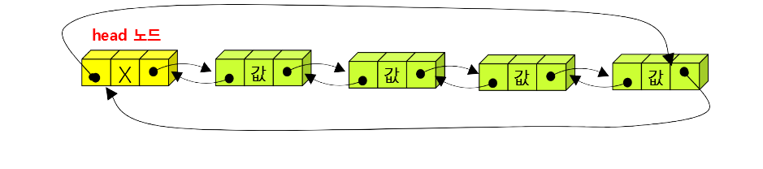

이 알고리즘은 이중연결을 사용한 리스트 알고리즘 입니다.
이중연결로 리스트를 만들었을때 장점은 삽입, 삭제할 때 나머지 데이터를 밀어내거나 당겨서 재구성하는 것이 아니라 간단하게 재구성 하므로 시간 성능의 효율이 좋으며 동적 메모리를 사용하기 때문에 리스트에 저장할 데이터 개수가 제한되지 않는 점 입니다. 또한 단순연결리스트는 장애가 발생하여 데이터가 손실되었을 때 복구할 수 없지만 이중연결리스트는 이중으로 연결되어있어 복구가 가능하다는 점이 있습니다. 단점은 구현(설계 및 코딩)이 약간 복잡하다는 점입니다.
마치 단순연결리스트는 1차선도로와 유사하고 이중연결리스트는 2차선도로와 유사합니다.
왼쪽 메뉴를 통해 이중연결리스트 알고리즘을 알아보세요!
